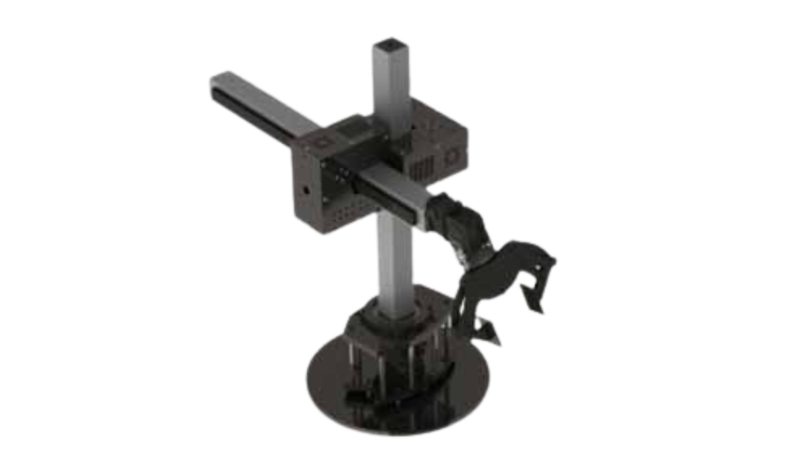

Robô industrial • coordenadas cilíndricas
Robô Cilíndrico
Robô que opera em um volume de trabalho cilíndrico, combinando movimentos lineares e rotacionais.

Conceito
Os robôs cilíndricos são manipuladores industriais que utilizam um sistema de coordenadas cilíndricas, combinando rotação na base, movimento vertical e deslocamento radial. Esse tipo de robô é bastante utilizado em operações de transferência e manuseio de peças.
Princípio de funcionamento
O robô possui uma base rotativa que permite o giro em torno do próprio eixo. Além disso, conta com um eixo vertical para movimentação para cima e para baixo e um braço que se estende ou retrai, formando um movimento radial.
Principais características técnicas
- Movimento rotacional e linear
- Área de trabalho cilíndrica
- Estrutura compacta
- Controle relativamente simples
- Boa capacidade de carga
Vantagens
- Boa área de alcance
- Estrutura simples
- Boa eficiência em tarefas repetitivas
Desvantagens
- Menor precisão que robôs cartesianos
- Movimentos mais limitados
- Menor flexibilidade
Aplicações industriais
Os robôs cilíndricos são utilizados em operações como alimentação de máquinas, soldagem, montagem e transporte de peças em processos industriais.
Integração com IoT
Podem ser integrados a sistemas industriais para monitoramento de desempenho, tempo de operação e manutenção preventiva, contribuindo para a Indústria 4.0.